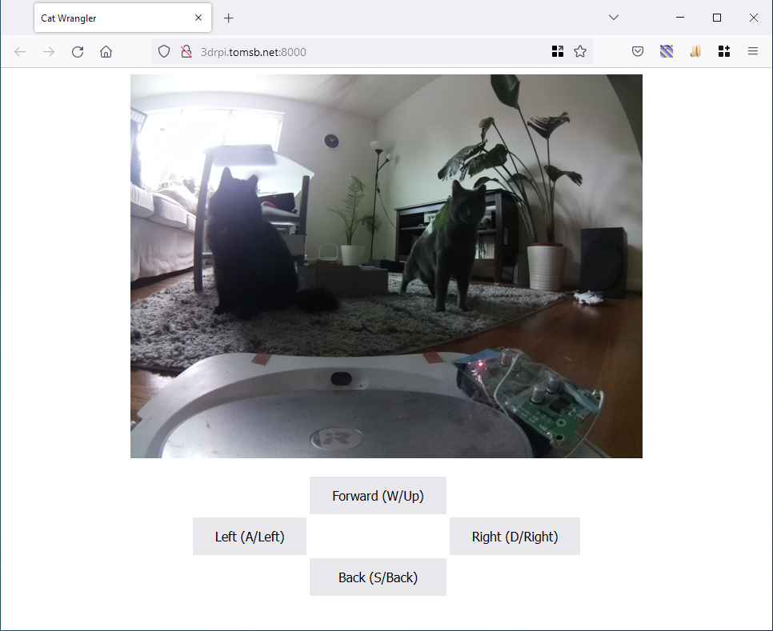
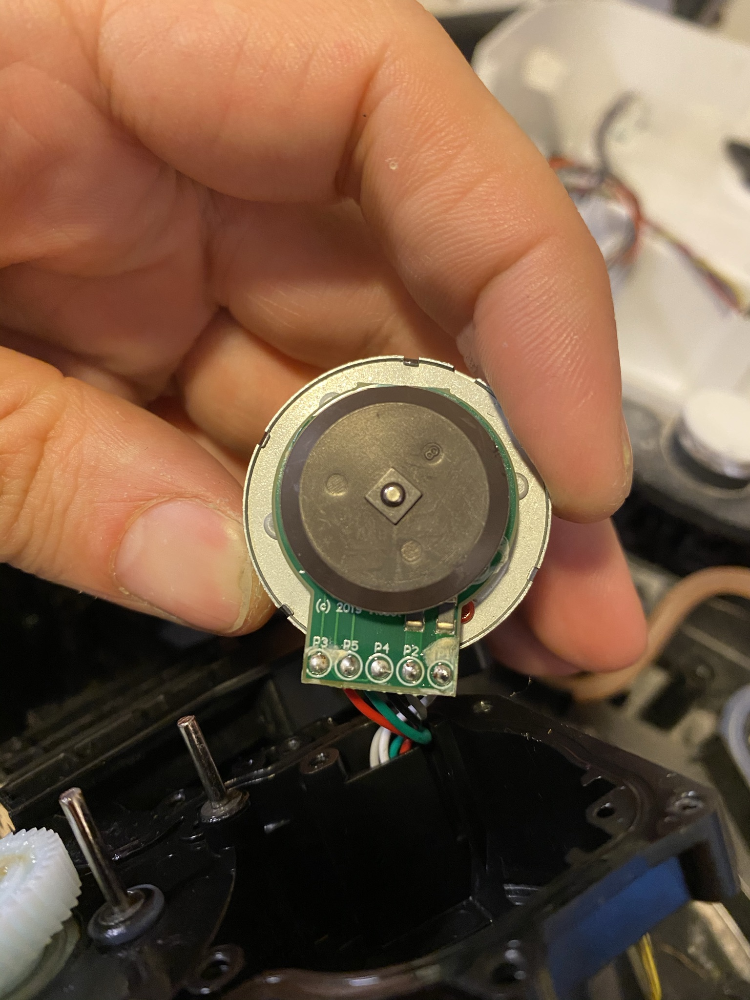

Cat Wrangler
[[2020-06-14]] to [[2021-07-21]]
When traveling, I really want to be able to check on the cats to see if they're up and about. (In fact, the device made here turned out to be really useful on on trip, when one of the two got himself trapped behind the dryer. We were able to discover this by remote inspection, and tell a friend to free him.)
So, some time in June 2020, I decided I wanted to make a little rover drive around the house and check on things. And also to be a pretty simple project to show a friend the basics of such things.
I started with an chassis left over from the robocar course I helped teach a few years before, but it would still take major custom fabrication to create a reliable charging dock.
Then, about a year later, my iRobot Braava mop stopped working, so I broke it open.

After poking around a bit I decided there was nothing I could easily do to make it work as designed, I decided this would be a perfect chassis for such a project, since the mechanics of charging were already solved.
I determined that the battery management circuitry prevented me from easily using the original packs (they needed some kind of wakeup signal to start providing power), so I instead used an alternative min-UPS board from Amazon with a couple 18650 cells. I pulled out all the circuitry in the charging dock and instead put a little low-voltage power supply; enough to charge the UPS.
I then put a motor control board and a camera on an Raspberry Pi and a little Flask interface that I can connect to over my VPN from anywhere.
The two orange tape marks help me line up on the charger. The little red light gets much brighter when it starts charging.

In future work, I'd like to
- [ ] Use the encoders on the wheels (pictured below) to get reliable speed control, for repeatable maneuvers.
- These encoders work fine--put 5 volts across the red and black (IIRC) lines, and saw two square waves on a scope with two other lines.
- It would definitely be straightforward to write some interrupt code to integrate that motion to get a live speed readout I could use in a PID loop while driving.
- I got a picture of said scope output, but unfortunately it's not in my folder for the project.
- [ ] Add some automatic behaviors, such as return-to-base (a much bigger project, and maybe not one for an RPI). Something like this.
